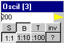
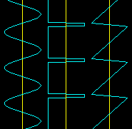

Analog Generator 
This is a simple analog oscillator.
On the right the settings window is shown, together with the scope display of some possible signals.
The frequency can be set in the editbox, and is activated after the ENTER key is pressed.
S,B,T:
S = SineWave
B = Block (SquareWave)
T = TriangleWave
Duty cycle can be set by the buttons 1:1, 1:10, 1:100
Signal can be inverted by button INV
Analog signals are generated in 10 bit representation and will span the whole range of 0 .. 5 Volt.
Possible improvements:
- speed increasing by optimizing the execute function
- speed increasing by defining a slow execution phase

